TypeScript 강좌(1) - Introduction
TypeScript 강좌는 여러 절로 구성되어 있습니다.
- TypeScript 강좌(1) - Introduction
- TypeScript 강좌(2) - Data Type(Part 1)
- TypeScript 강좌(3) - Data Type(Part 2)
- TypeScript 강좌(4) - 변수 선언
- TypeScript 강좌(5) - Destructuring
- TypeScript 강좌(6) - Interface
- TypeScript 강좌(7) - Class
TypeScript 개요 및 WebStorm 개발환경 설정
TypeScript는 Microsoft에서 개발하여 2012년에 발표한 오픈 소스 프로그래밍 언어입니다.
대규모 JavaScript application 개발을 목적으로 만들어졌습니다.
TypeScript의 특징은 다음과 같습니다.
- TypeScript는 JavaScript의 Superset입니다. TypeScript는 JavaScript의 모든 기능을 포함하고 그 외 추가적인 기능들을 가지고 있습니다.
- TypeScript는 컴파일 언어이지만 컴파일 결과가 machine code가 아닌 JavaScript 코드가 나옵니다. ( 이런 프로그래밍을 메타프로그래밍 이라고 하죠. ) 그렇기 때문에 compile 대신에 transpile 이라고도 합니다.
- TypeScript는 compile 시점에 type checking이 일어나는 정적 타입 언어입니다.
TypeScript 개발환경 설정
여기서는 Node.js를 이용하여 npm(Node Package Manager)을 설치하고 이 npm을 이용해 TypeScript를 설치하고
사용하는 방법에 대해서 알아보겠습니다.
먼저 Node.js사이트에 접속해 LTS 버전이나 최신버전 둘 중 하나를 선택해 다운로드 합니다. (어떤것을 설치해도 상관없습니다.) 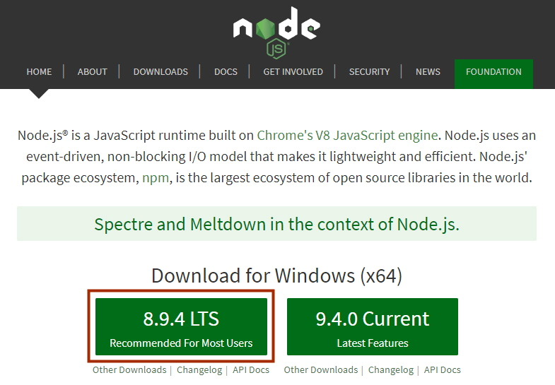
저는 LTS 버전으로 다운로드 했습니다. 다운로드가 끝나면 기본 형태로 설치를 진행합니다. 설치가 끝나면
C:/Program Files/nodejs 폴더가 만들어지게 됩니다.
이제 command 창을 열어서 다음과 같이 명령어를 실행해봅니다.
npm
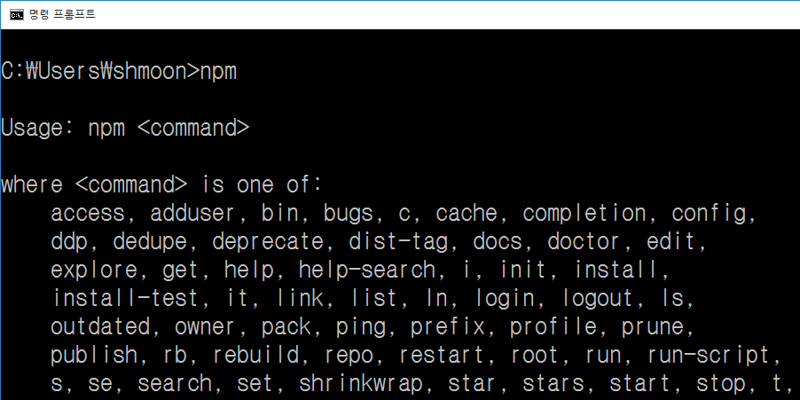
npm(Node Package Manager)이 정상적으로 동작하면 이제 npm을 이용해 typescript를 설치할 수 있습니다.
설치는 local mode와 global mode로 설치가 가능합니다. 여기서는 편의상 global mode로 설치합니다.
(일반적으로는 local mode를 선호합니다.)
command 창에서 다음과 같이 명령어를 이용해 typescript를 global로 설치합니다.
npm install -g typescript
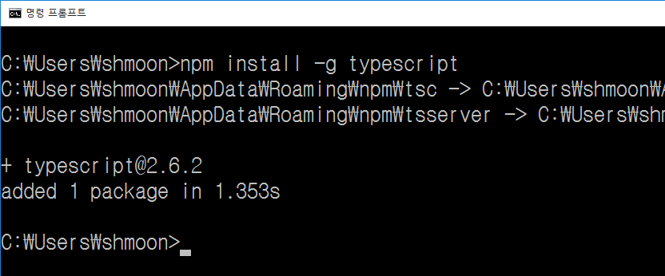
typescript 2.6.2가 설치되었습니다.
global mode로 설치하면 windows 시스템을 기준으로
$USER_HOME/AppData/Roaming/npm/node_modules에 설치됩니다.
이제 사용할 IDE(Integrated Development Environment)를 설치합니다. 여기서는 WebStorm(유료)을 이용합니다.
Visual Studio Code(무료)를 사용하셔도 됩니다. WebStorm은 유료이지만 30일 trial을 사용할 수 있고 Student license로
1년간 무료로 사용할 수 도 있습니다.
JetBrains사이트로 접속한 후 WebStorm을 다운로드 받습니다.
다운로드가 완료되면 기본형태로 설치합니다. 설치가 끝나면 프로젝트를 생성할 수 있는 화면이 나오게 되는데
폴더 하나를 생성해서 프로젝트를 생성합니다. (폴더명이 프로젝트명이됩니다.) 저는 D:/TypeScriptTestApp 폴더를
생성하면서 프로젝트를 하나 만들었습니다.
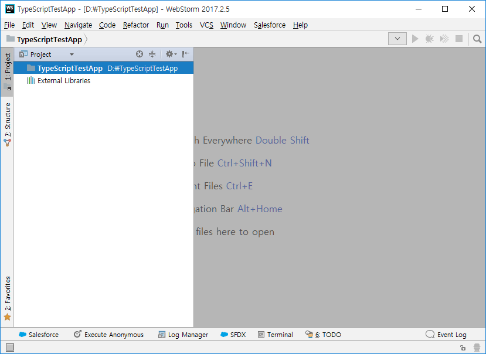
이제 WebStorm 설정을 해야 합니다.
Files - Settings - Languages & Frameworks - TypeScript 를 선택하면 아래와 같은 화면을 볼 수 있습니다.
사실 WebStorm에 TypeScript가 bundle되어 들어있기 때문에 TypeScript를 따로 설치 안해도 됩니다. 하지만 어떻게 설치하는지는 알아둘 필요는 있으니 한번 설치해 본거죠. 그리고 아래의 그림처럼 Compiler 옵션부분을 check합니다.
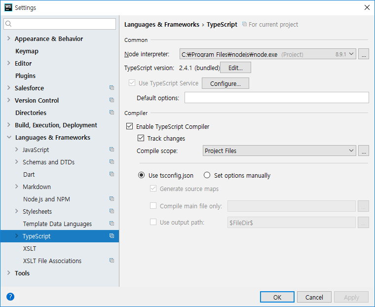
컴파일을 할 때 tsconfig.json을 참조해 compile option을 설정한다고 해 놓았습니다. 우리는 아직 tsconfig.json
이 없으니 하나 생성해 줍니다. WebStorm의 하단에 있는 Terminal을 클릭해서 Terminal창을 열고 다음을 입력합니다.
tsc --init
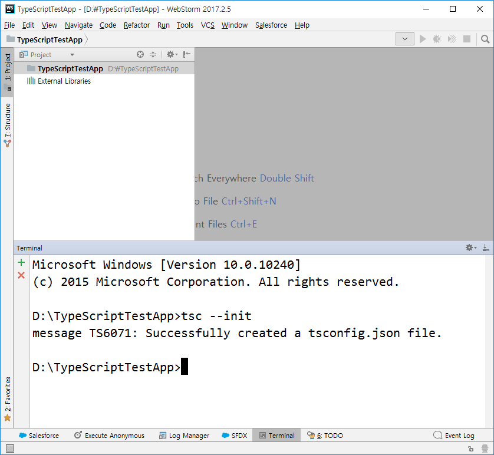
프로젝트를 살펴보면 tsconfig.json이 생성되어 있는것을 볼 수 있고 안에 무언가가 많이 들어있는것을 확인할 수 있습니다.
compiler option에 대해서는 다른 포스트에서 알아보기로 하고 이제 간단한 ts 파일(typescript file)을 하나 생성합니다.
이름을 hello.ts라고 하죠.
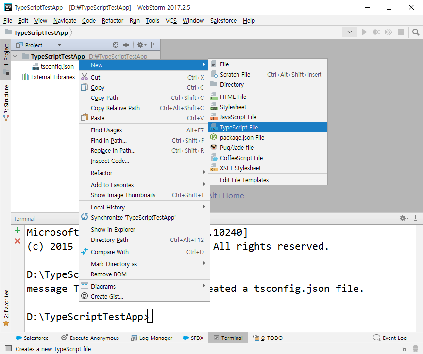
다음과 같은 코드를 입력합니다.
class Greeting {
greeting: string;
constructor(message: string) {
this.greeting = message;
}
sayHello() {
return "Hello " + this.greeting;
}
}
let tmp = new Greeting("World!!");
console.log(tmp.sayHello());
내가 알고있던 javascript가 아니라서 당황스럽지요? 별로 어렵지 않습니다. 객체지향 언어를 알고 있으면 더욱 더 쉽게 접근할 수 있습니다. 여하간 이렇게 코딩을 하고 저장하면 자동적으로 컴파일을 진행하고 그 결과 파일(.js)을 생성해 줍니다.
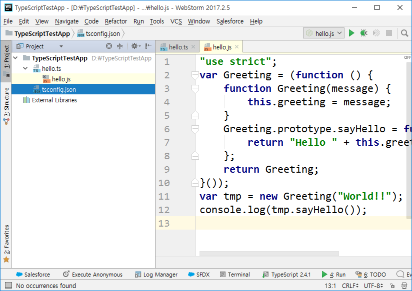
마지막으로 coding convention을 지정할 수 있는 tslint를 설치하도록 하겠습니다. 반드시 설치해야하는건 아니지만
발생할 수 있는 오류를 미리 감지하고 coding convention을 맞추기 위해서 사용하는 것이 일반적입니다.
WebStorm에서 다시 터미널을 열고 다음과 같이 입력하여 tslint를 설치합니다. 역시 global mode로 설치합니다.
npm install -g tslint
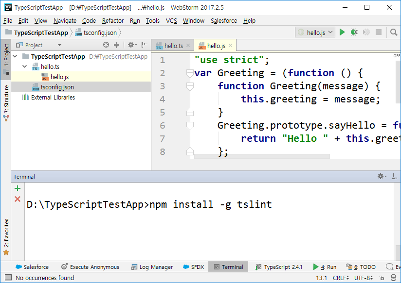
그리고 다시 설정으로 들어갑니다.
Files - Settings - Languages & Frameworks - TypeScript - TSLint 를 선택하면 아래와 같은 화면을 볼 수 있습니다.
Enable를 check합니다. tslint.json을 찾아서 Cofiguration file로 이용한다는 군요.
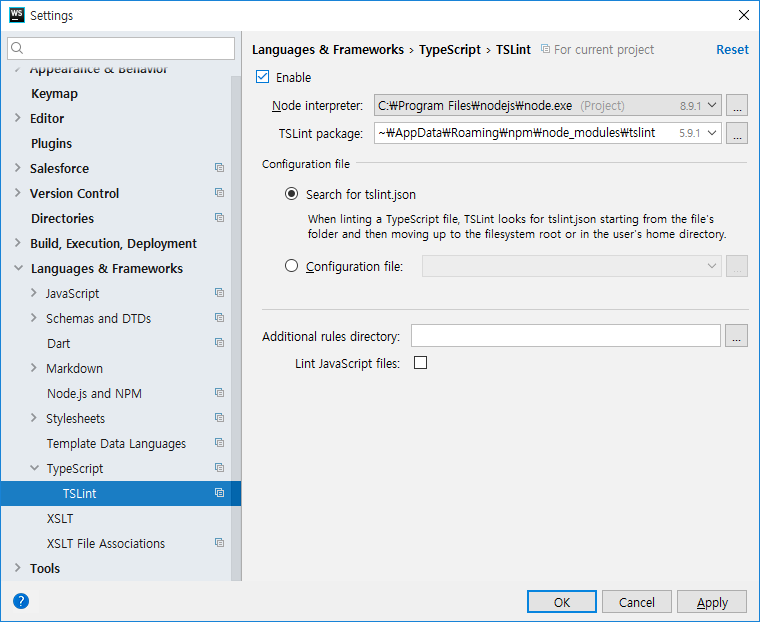
tslint.json 파일이 있어야 하니 Terminal을 열어서 다음과 같이 입력해서 tslint.json도 생성해 줍니다.
tslint --init
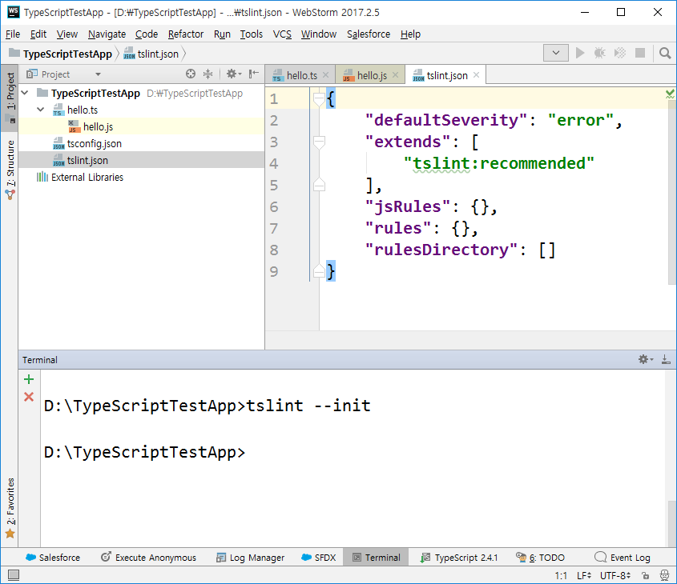
이제 우리가 작성한 hello.ts 파일을 다시 열어보면 여러가지 알수없는(?) 빨간색들이 산재해 있는것을 보실 수 있습니다.
에러는 아니지만 tslint에 의해서 coding convention에 위배되는 것들입니다.
적절하게 수정해야 합니다. 설정해야 하는 것이들 많이 있지만 연습삼아 한가지만 설정하겠습니다. console에 대한 tslint 오류를 없애보도록 하죠.
수정한 tslint.json파일은 다음과 같습니다.
{
"defaultSeverity": "error",
"extends": [
"tslint:recommended"
],
"jsRules": {},
"rules": {
"no-console": false
},
"rulesDirectory": []
}
오류를 수정한 최종 hello.ts파일은 다음과 같습니다.
class Greeting {
private greeting: string;
constructor(message: string) {
this.greeting = message;
}
public sayHello() {
return "Hello " + this.greeting;
}
}
let tmp = new Greeting("World!!");
console.log(tmp.sayHello());
여기까지해서 TypeScript를 학습하기 위한 기본적인 환경설정을 잡으시면 됩니다.
tslint는 실 개발시에는 필요하지만 처음 TypeScript를 공부할 때는 끄고 하시는게 정신건강에 이로울 수 있습니다. 사실 쓸데없는coding convention도 많거든요.
End.